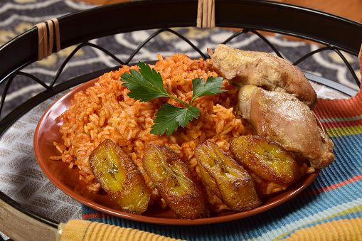
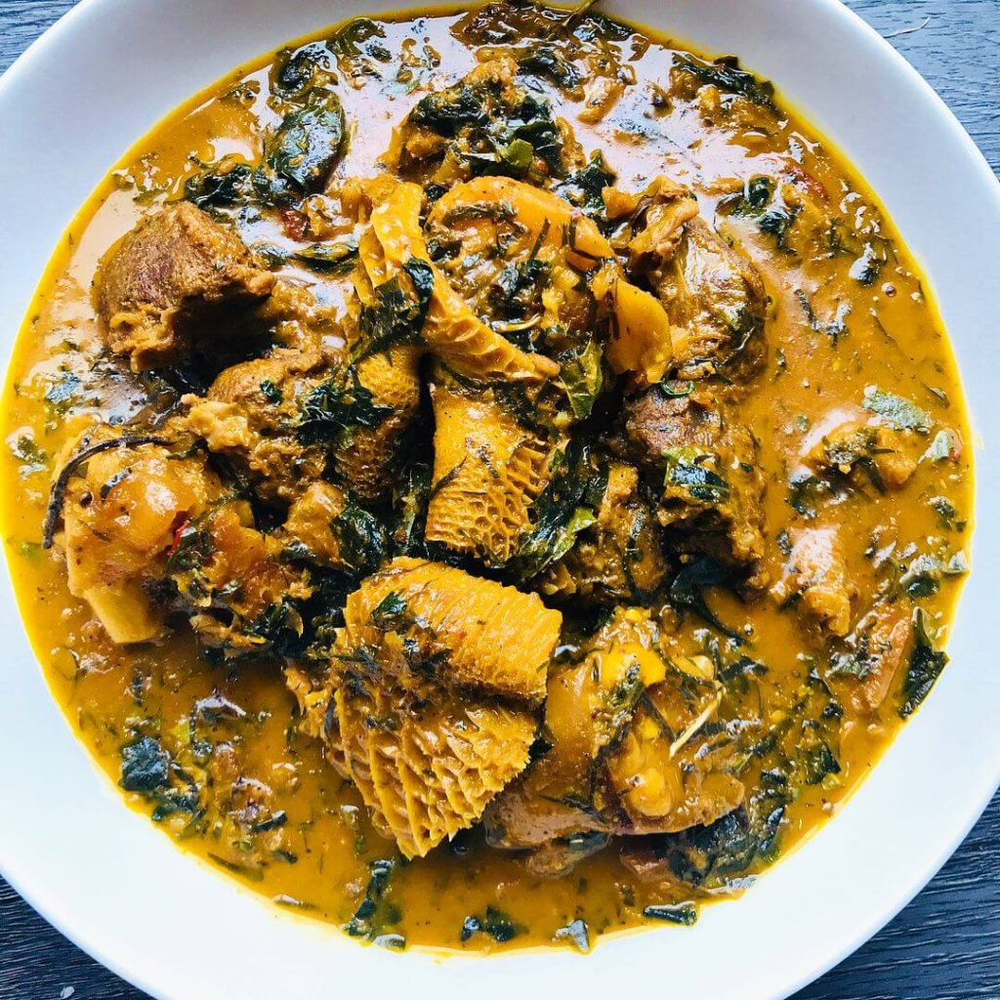

Nigerian Traditional Dishes

Jollof Rice

Bitter leaf Soup

Yam Porridge

Abacha
Welcome to Kaycee
Cookery School
The Kaycee Cookery School is the perfect place
to improve your Nigerian cookery skills.
Come learn how to make delicious
traditional Nigerian dishes known for it's
rich spices and tasty flavours.
Jollof Rice
Bitter leaf Soup
Yam Porridge
Abacha
Become an expert in Nigerian Dishes!
Sign up to learn the best cooking skills Now!